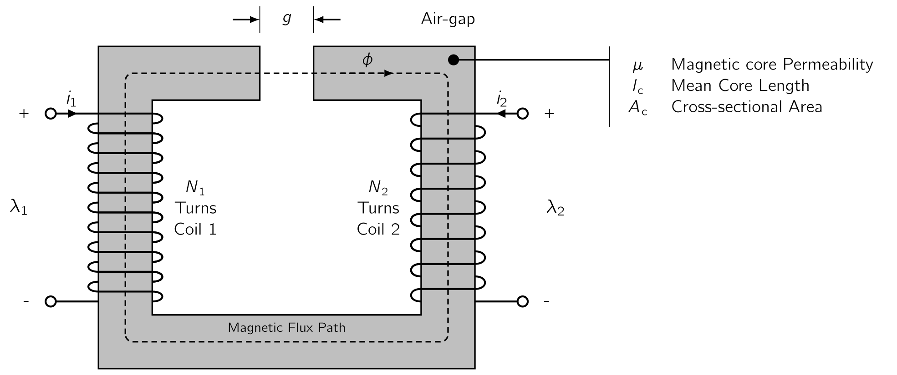
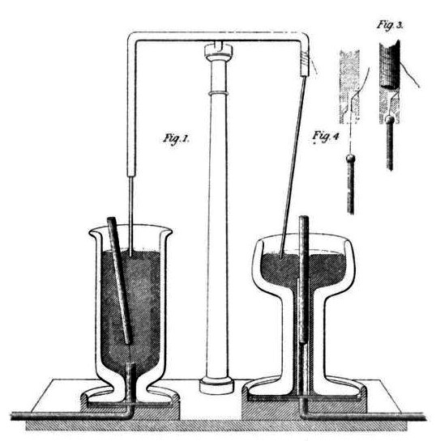

When a magnetic field varies with time, an electric field is produced in space as per Faraday’s [13][13]Michael Faraday (1791 - 1867) An English chemist and physicist who contributed to the study of electro-chemistry and electromagnetism. His main discoveries include the principles underlying electromagnetic induction, diamagnetism, and electrolysis. Although Faraday received little formal education, as a self-made man, he was one of the most influential scientists in history [†]Rao, C. N. R. Understanding chemistry (Universities Press, 2000). It was by his research on the magnetic field around a conductor carrying a direct current Faraday established the concept of the electromagnetic field in physics. Faraday also established magnetism could affect rays of light and that there was an underlying relationship between the two phenomena. He similarly discovered the principles of electromagnetic induction, diamagnetism, and the laws of electrolysis. His inventions of electromagnetic rotary devices formed the foundation of electric motor technology, and it was largely due to his efforts that electricity became practical for use in technology. The SI unit of capacitance, the farad, is named after him. law:
| (1.21) |
Eq. (1.22) states:
In magnetic structures with windings of high electrical conductivity, such as in Fig. 1.2, it can be shown, the field in the wire is extremely small and can be neglected, so that the LHSLeft Hand SideLeft Hand Side of Eq. (1.22) reduces to the negative of the induced voltage () at the winding terminals. In addition, the flux on the RHSRight Hand SideRight Hand Side of Eq. (1.22) is dominated by the core flux . Since the winding, and therefore the contour , links the core flux times, Eq. (1.22) reduces to:
| (1.22) |
where is the flux linkage of the winding and is defined as:
| (1.23) |
Flux linkage is measured in units of (or equivalently ). The symbol is used to indicate the instantaneous value of a time-varying flux. In general the flux linkage of a coil is equal to the surface integral of the normal component of the magnetic flux density integrated over any surface spanned by that coil.
Direction of the induced voltage () is defined by Eq. (1.22) so if the winding terminals were short-circuited, a current would flow in such a direction as to oppose the change of flux linkage.
For a magnetic circuit composed of magnetic material of constant magnetic permeability or which includes a dominating air gap, the relationship between and will be linear and we can define the inductance as:
| (1.24) |
Substitution of Eq. (1.5) , Eq. (1.18) and Eq. (1.23) into Eq. (1.24) gives:
From which we see that the inductance of a winding in a magnetic circuit is proportional to the square of the turns and inversely proportional to the reluctance of the magnetic circuit associated with that winding.
As an example, from Eq. (1.20) , under the assumption that the reluctance of the core is negligible as compared to that of the air gap, the inductance of the winding in Fig. 1.2 is equal to
| (1.25) |
Inductance is measured in henrys [14][14]Joseph Henry (1797 - 1878) An American physicist and inventor who served as the first secretary of the Smithsonian Institution. While building electromagnets, discovered self-inductance. He also discovered mutual inductance independently of Michael Faraday, though Faraday was the first to make the discovery and publish his results and work on the electromagnetic relay was the basis of the practical electrical telegraph. In his honour, the SI unit of inductance is named the henry. (H) or weber-turns per ampere.
Eq. (1.25) shows the dimensional form of expressions for inductance;
It must be emphasised that, strictly speaking, the concept of inductance requires a linear relationship between flux and MMFMagneto-motive ForceThe magnetic pressure which drives magnetic flux in a magnetic circuit, and is the work done to move a unit magnetic pole.. Therefore, it cannot be rigorously applied in situations where the nonlinear characteristics of magnetic materials, dominate the magnetic system.
However, for many situations of practical interest, the reluctance of the system is dominated by that of an air gap, which is of course linear, and the non-linear effects of the magnetic material can be ignored.
In other cases it may be perfectly acceptable to assume an average value of magnetic permeability for the core material and to calculate a corresponding average inductance which can be used for calculations of reasonable engineering accuracy.
Using Python, plot the inductance of the magnetic circuit given in (TutBook) Ex. ?? as a function of core permeability over the range .
The script for the plot is as follows:
#+begin_src python
import numpy as np
import matplotlib.pyplot as plt
mu0 = 4 * np.pi * 1e-7 # (H/m) permeability of free space
lc = 0.3 # (m) length
Ac = 9e-4 # (m2) cross-sectional area
Ag = 9e-4 # (m2) cross-sectional area
g = 5e-4 # (m) air gap length
N = 500 # (-) number of turns
Bc = 1 # (T) Core magnetic field density
Rel_g = (g) / (mu0 * Ag) # (Ampere-Turns/Weber) air-gap reluctance
mur = np.zeros(1000) # Relative Permeability emtpy array for looping
for i in range(len(mur)):
mur[i] = 100 + (100000 - 100) * (i - 1)/1000
Rel_c = (lc) / (mur * mu0 * Ac) # (Ampere-Turns/Weber) core reluctance
R_tot = Rel_c + Rel_g # (Ampere-Turns/Weber) total reluctance
L= N**2 / R_tot # (H) Inductance
# -- Plotting
plt.xlabel('Core Relative Permeability ($\mu_r$) [H/m]')
plt.ylabel('Inductance [H]')
plt.xlim(0, 0.8e5)
plt.ylim(0, 1)
plt.title("Core Relative Permeability vs. Inductance Graph", color='#c6d0f5')
plt.plot(mur, L,'#ef9f76', linewidth=5)
fig.tight_layout()
Please observe the resultant plot. The figure clearly confirms that, for the magnetic circuit of this example, the inductance is quite insensitive to relative permeability until the relative permeability drops to on the order of 1000. Therefore, as long as the effective relative permeability of the core is “large”, which in this case greater than 1000, any non-linearities in the properties of the core material will have little effect on the terminal properties of the inductor.

Fig. 1.4 shows a magnetic circuit with an air gap and two (2) windings. In this case please observe the MMFMagneto-motive ForceThe magnetic pressure which drives magnetic flux in a magnetic circuit, and is the work done to move a unit magnetic pole. acting on the magnetic circuit is given by the total ampere-turns acting on the magnetic circuit [15] i.e., the net ampere turns of both windings. and that the reference directions for the currents have been chosen to produce flux in the same direction.
The total MMFMagneto-motive ForceThe magnetic pressure which drives magnetic flux in a magnetic circuit, and is the work done to move a unit magnetic pole. is therefore calculated to be:
| (1.26) |
and from Eq. (1.20) , with the reluctance of the core neglected and assuming , the core flux is:
| (1.27) |
In Eq. (1.27) , is the resultant core flux produced by the total MMFMagneto-motive ForceThe magnetic pressure which drives magnetic flux in a magnetic circuit, and is the work done to move a unit magnetic pole. of the two windings.
It is this resultant which determines the operating point of the core material.
If Eq. (1.27) is broken up into individual currents, the resultant flux linkages of coil 1 can be expressed as
| (1.28) |
which can be written in a simpler form as:
| (1.29) |
where:
| (1.30) |
is the self-inductance of Coil 1, and is the flux linkage of Coil 1 due to its own current . The mutual inductance between coils 1 and 2 is:
| (1.31) |
and is the flux linkage of coil 1 due to current in the other coil. Similarly, the flux linkage of coil 2 is
| (1.32) |
or
| (1.33) |
where is the mutual inductance and
| (1.34) |
is the self-inductance of coil 2.
It is important to note that the resolution of the resultant flux linkages into the components produced by and is based on superposition of the individual effects and therefore implies a linear flux-MMFMagneto-motive ForceThe magnetic pressure which drives magnetic flux in a magnetic circuit, and is the work done to move a unit magnetic pole. relationship. [16] characteristic of materials of constant permeability.
Substitution of Eq. (1.24) in Eq. (1.22) gives:
| (1.35) |
for a magnetic circuit with a single winding. For a static magnetic circuit, the inductance is fixed, [17] assuming that material non-linearities do not cause the inductance to vary and this equation reduces to the familiar circuit-theory form:
| (1.36) |
However, in electromechanical energy conversion devices, inductances are often time-varying, and Eq. (1.35) must be written as
| (1.37) |
Note that in situations with multiple windings, the total flux linkage of each winding must be used in Eq. (1.22) to find the winding-terminal voltage. The power at the terminals of a winding on a magnetic circuit is a measure of the rate of energy flow into the circuit through that particular winding. The power, , is determined from the product of the voltage and the current
| (1.38) |
and its unit is watts (), or (). Therefore, the change in magnetic stored energy in the magnetic circuit in the time interval to is
| (1.39) |
In SI units, the magnetic stored energy is measured in joules (). For a single-winding system of constant inductance, the change in magnetic stored energy as the flux level is changed from to can be written as
| (1.40) |
The total magnetic stored energy at any given value of can be found from setting equal to zero:
| (1.41) |

Before their modern versions, motors using electrostatic forces were investigated. The first electric motors were simple electrostatic devices described in experiments by Andrew Gordon and Benjamin Franklin in the 1740s [†]Jefimenko, O. D. & Walker, D. K. Electrostatic motors: their history, types, and principles of operation. (No Title) (1973). However, due to the difficulty of generating the high voltages they required, electrostatic motors were never used for practical purposes.
The invention of the electro-chemical battery by Alessandro Volta in 1799 [†]Guarnieri, M. The Big Jump from the Legs of a Frog [Historical]. IEEE Industrial Electronics Magazine 8, 59–61 (2014) made persistent electric currents possible. Hans Christian Ørsted discovered in 1820 that an electric current creates a magnetic field, which can exert a force on a magnet. It only took a few weeks for André-Marie Ampère to develop the first formulation of the electromagnetic interaction and present the Ampère’s force law, that described the production of mechanical force by the interaction of an electric current and a magnetic field [†]Guarnieri, M. Revolving and evolving-early DC machines [Historical]. IEEE Industrial Electronics Magazine 12, 38–43 (2018).
Michael Faraday gave the first demonstration of the effect with a rotary motion in 1821 [†]ri2021. The Birth of Electric Motion 2021. A free-hanging wire was dipped into a pool of mercury, on which a PMPermanent MagnetAn object made from a material that is magnetized and creates its own persistent magnetic field was placed. When a current was passed through the wire, the wire rotated around the magnet, showing that the current gave rise to a close circular magnetic field around the wire [†]van Geloven, A. The development of the electric motor.
-
¶
- PMPermanent Magnet
An object made from a material that is magnetized and creates its own persistent magnetic field
-
¶
- MMFMagneto-motive Force
The magnetic pressure which drives magnetic flux in a magnetic circuit, and is the work done to move a unit magnetic pole.
-
¶
- RHSRight Hand Side
Right Hand Side
-
¶
- LHSLeft Hand Side
Left Hand Side